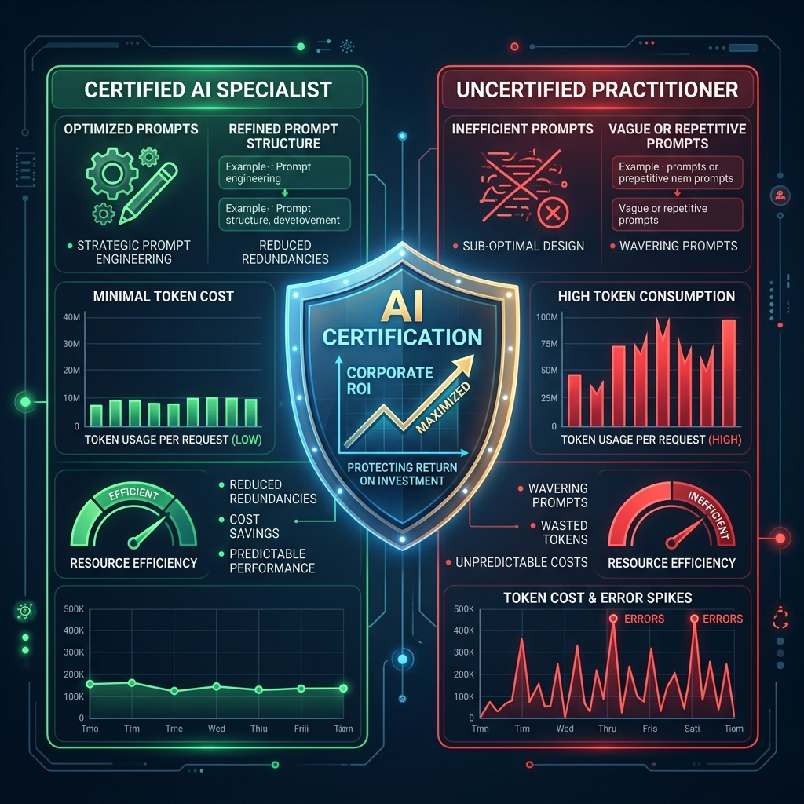

The core value of validation in an era of rapid change, continuous self-testing, and employer-side token cost optimization.
In a technology landscape where models and paradigms shift quarterly, certificates are not static credentials—they are milestones in a process of continuous self-learning.
True expertise requires constantly pushing yourself out of your comfort zone, building applications, exploring limits, and validation. Testing yourself through certifications provides a standardized benchmark to discover your gaps and structure your self-directed curriculum.
"Building the tools is the way to learn while creating the notes — that is the active self-learning process."
Generative AI investments represent a major shift in operational budgets. In the age of Large Language Models (LLMs), executing workflows directly scales with "spending tokens" (computational power that carries a direct financial cost). Without verified skills, AI implementation quickly becomes a silent resource drain.

A worker without verified skills struggles with complex tasks, relying on trial-and-error.
A certified worker understands the underlying model architecture, token constraints, and tools.
Hiring or deploying uncertified practitioners who constantly overspend on tokens directly reduces the company's Return on Investment (ROI). Employee certification functions as a shield that secures the technological investment:
Verifies engineering knowledge and hands-on skills before a major computational budget is allocated.
Ensures engineers optimize the token burn rate, design precise MCP tools, and manage context windows intelligently.
Provides a reliable filter for employers to confidently invest in agentic automation with predictable operational costs.